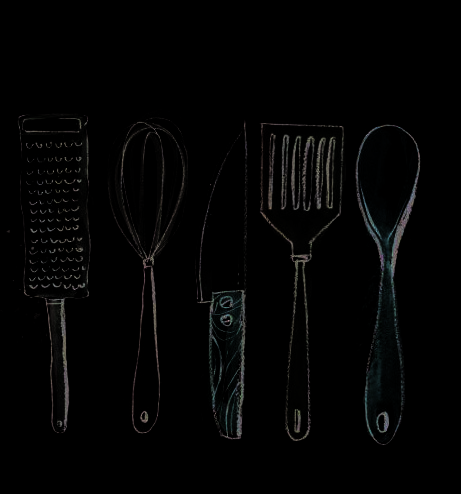

Красота подачи и тарелки так же важны, как и вкус самого блюда. Это вовсе не означает, что вы должны подавать блюда как в ресторане. Безусловно, это отдельная наука и дома на такие истории нет времени, да и нет в них нужды. Тем не менее, могу вас заверить, что ресторанная подача очень сильно влияет на ваши вкусовые ощущения. Это дополнительные ощущения, удовольствие от созерцания. Но дома мы тоже можем кое-что сделать.
Учитесь резать. Это важно. Когда продукты аккуратно нарезаны, финальное блюдо выглядит аккуратно и красиво. Это не означает, что вам нужно стать абсолютным профи и научиться всяким сложным ресторанным техникам, но уметь нарезать аккуратными кубиками или красиво разделать курицу — важно. Инвестируйте в это несколько часов своего времени, и результат не заставит себя ждать.
Мы едим минимум три раза в день. Поэтому в красивые тарелки стоит вложиться. Как в хорошее пуховое одеяло на зиму или удобный матрац. Да, это так же важно и не так дорого. Сегодня посуду не обязательно покупать целыми сервизами — можно покупать по 1-2 тарелке, и, в целом, приветствуется некоторая эклектика. У меня давно нет сервиза; я покупаю понравившиеся мне тарелки и использую их по настроению. Стоимость хорошей тарелки в среднем составляет 30 евро. Если там, где вы живете, посуда дорогая или плохой выбор, привозите тарелки из поездок. Будет вам красивое воспоминание о прекрасных странах!
Мои любимые бренды: Green Gate, Gien, Villeroy&Boch, Jars ceramics, Menu, Anthropology, Asa
В ресторанах редко бывают цветастые тарелки. Обычно они однотонные, максимум с какими-то вкраплениями. Объясняется это просто. Тарелка с рисунком может перебить рисунок блюда. На белом или однотонном красиво украшенное блюдо смотрится ярко и выделяется, а с рисунком — уже перебор.
Что же касается дома, я считаю, что это дело вкуса и настроения. У меня есть и гладкая посуда, и с рисунками, и использую я ее по настроению. К тому же рисунок часто располагается в середине тарелки, и виден он становится только по мере поедания блюда. Я рассматриваю это как дополнительное эстетическое удовольствие. Например, моя любимая серия посуды Прованс от Gien настолько красива, что можно часами любоваться деталями рисунков.
Я делаю красивые фото блюд для наборов не только для того, чтобы вам тотчас же захотелось их съесть, но и для того, чтобы вы обратили внимание на подачу. Как научиться красиво выкладывать еду? Это приходит с опытом. Мне очень помогло мое увлечение фуд-фото: со временем я поняла, как сделать так, чтобы еда красиво выглядела в кадре. Но еще очень важно научиться видеть еду красивой. Хорошими продуктами можно любоваться. Когда я училась снимать еду, я не могла понять, как фокусироваться на нужной точке. Оказалось, мой фотоаппарат барахлил. Но одна подруга (кулинарный блогер) сказала мне, что фотоаппарат чувствует, куда смотрит ее глаз, и там ставит фокус. Мы, конечно, похохотали с ней тогда, но иногда я думаю, что что-то в этом есть. Я снимаю еду красивой, потому что я вижу ее красивой. Не только через линзу своего объектива, но и собственными глазами и чувствами. Разве не красива хорошая фермерская курица? А сочный помидор «бычье сердце»? А маленькие огурчики с пупырышками? А красный лук, нарезанный полукольцами и блестящий на срезе? Готовьте вдумчиво, вдыхайте ароматы и наблюдайте за этой простой красотой на вашей кухне. Она случается здесь и сейчас каждый день. Уверяю вас, когда вы начнете смотреть на еду именно так, ваши блюда станут не только хороши на вкус, но и красивы на вид.
Купите себе хорошую терку для цедры. Лучшая — микроплейн. А есть еще специальные приспособления, которые снимают цедру красивыми тонкими завитками. Цедра — отличное и очень ароматное украшение. Хоть лимонная, хоть лаймовая, хоть апельсиновая.
Сейчас в магазинах все чаще можно купить такие проростки. Маленькие красивые листики украсят любое блюдо. Они бывают разноцветные, что особенно прекрасно и дает вам разнообразие. Кроме того, проращивать можно самостоятельно дома. И кстати, это супер полезно.
Сегодня в магазинах огромное разнообразие соли разных цветов и текстур. Это супер инструмент для украшения блюд. Черная, розовая, копченая, мелкая, крупная, в хлопьях. На любой вкус. Моя любимая — соль в хлопьях. Она не только красиво выглядит, но еще и очень приятно раскрывается во рту.
Как и соль, он эффектно украшает любое блюдо, одновременно придавая ей вкус. Что за блюдо без соли и перца?!